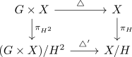
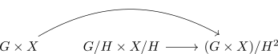

quotient group acts on the orbital collapse
Proposition
Let $(X, \mathcal{T})$ be a topological space, $G$ a topological group and $\triangle: G \times X \rightarrow X$ a topological group action. Then for a normal subgroup $H \trianglelefteq G$ there exists a canonical, continuous Group Action
Proof
welldefined
Suppose there exist $g,g' \in G$ and $x,x' \in X$ such that
Then there exist $h_g,h_x$ such that
Then we get
Let $h \coloneqq h_g \cdot h_x$. Since conjugation is a group automorphism and $H$ is a normal subgroup, we conclude that there exists an $h'$ such that
thus
and by construction,
Thus
Or equivalently
continuous
By welldefinedness, this diagram commutes

By construction of a quotient topology, $\triangle'$ is continuous if and only if $\triangle \circ \pi_H{^2} = \pi_H \circ \triangle $ is continuous, where $\triangle \circ \pi_H$ is continuous as composition of continuous maps.
Furthermore, by universal property of a quotient topology $(G \times X)/H^2$, the (pseudo-)identity from $G \times X$ to $(G \times X)/H^2$ is continuous
